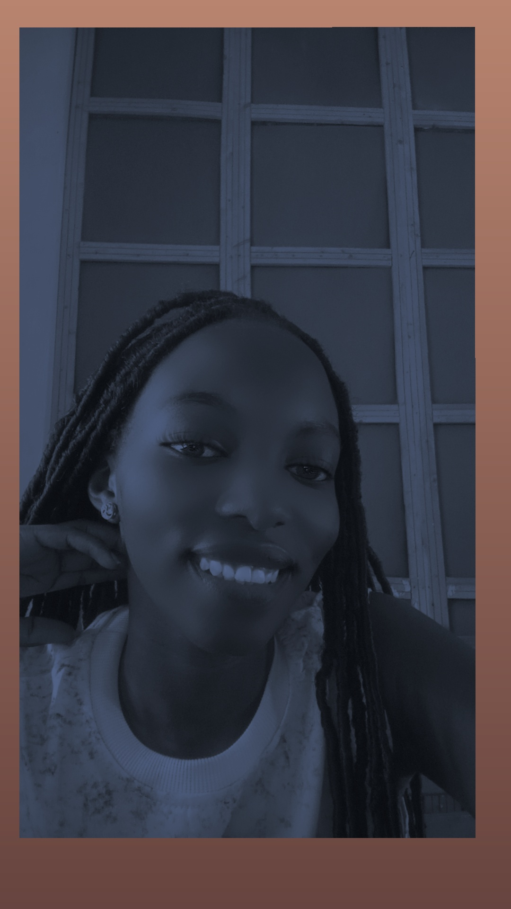

I am a student learning how people, data and technology work together.
I am studying for a Bachelor's degree in Information Systems and Technology. Outside class, I make time for prayer and for music.
Quiet time that keeps my days steady.
Headphones on while I study, walk or rest.
Message me on WhatsApp.
0707 473 329